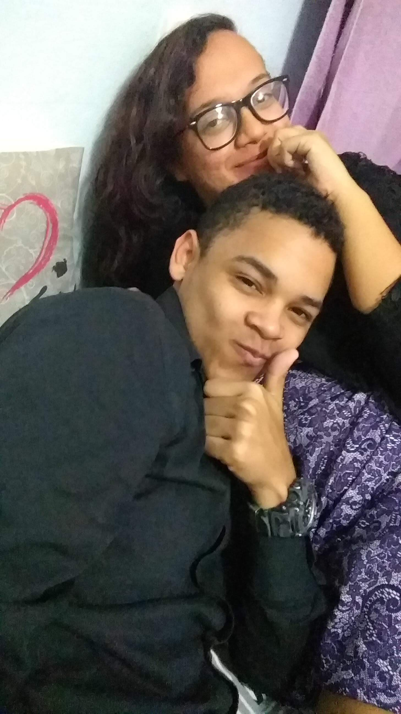
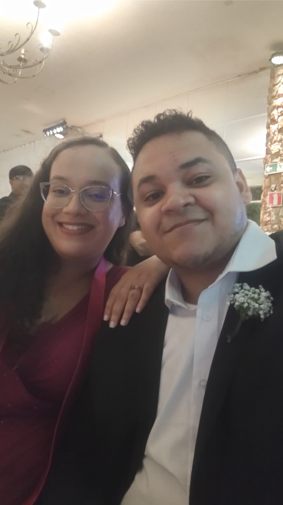
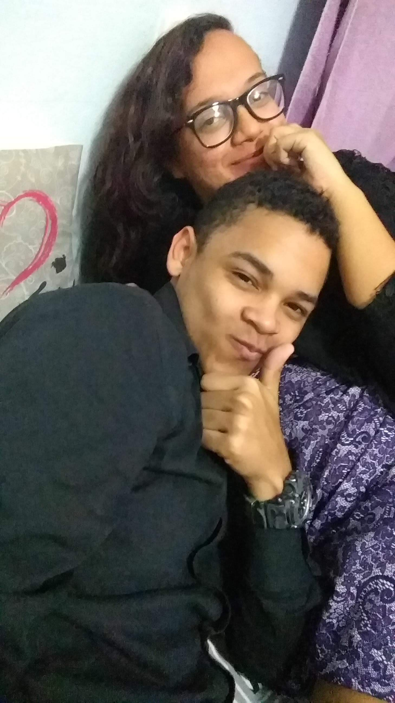
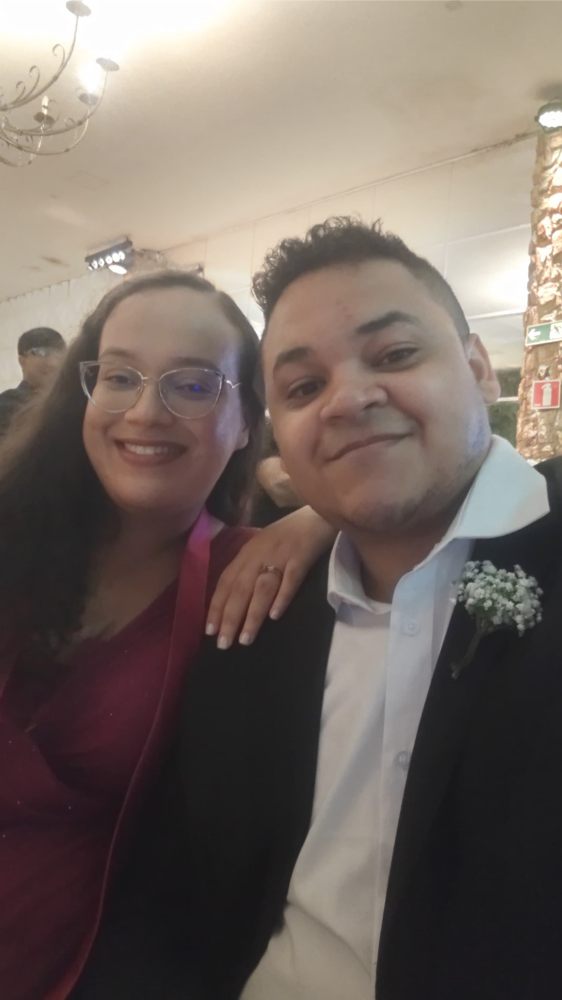
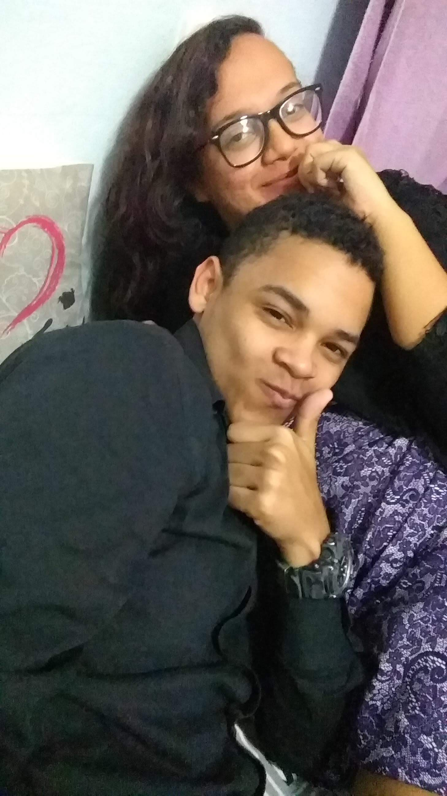
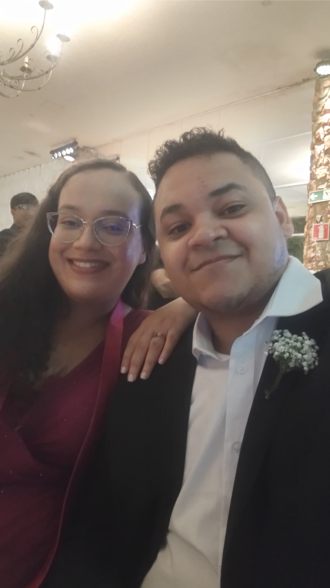
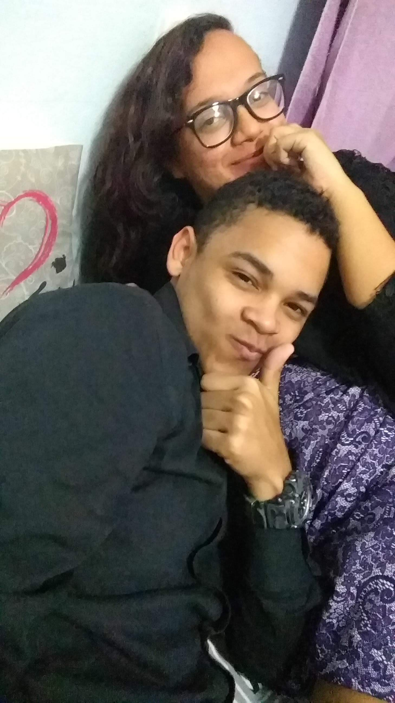
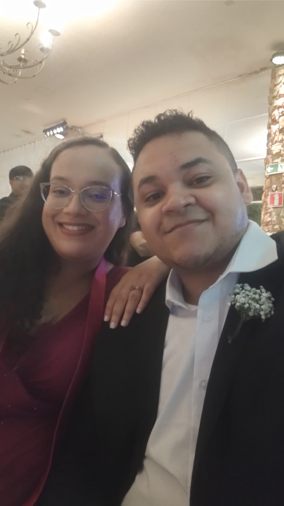

Meu amor, sei que já passou o dia que fizemos 7 anos, mas estava tentando fazer essa surpresa, só que faltava tempo, então resolvi fazer assim mesmo aqui no trabalho. Sei que é algo simples, mas espero que você guarde essa surpresa com você pra sempre.
Esse ano nós fizemos 7 anos juntos, 7 anos que dividimos a vida um com o outro, encarando os problemas e dificuldades da vida, mas graças a Deus, sempre Juntos. Já passamos por tantas coisas, tantos altos e baixos, e continuamos amando um ao outro incondicionalmente né?
Parece que estamos distante um do outro, por conta do trabalho que você está, que está consumindo sua energia e seu tempo, mas sei que Deus vai abrir um porta melhor logo logo e sei também que Ele vai nos reconectar novamente, só precisamos continuar firmes, sem desistir e sem retroceder, porque somos um só, minha vida.
Amar você, ter você pra mim, é a melhor parte da vida, é o que me dá motivos para acordar e lutar por algo melhor todos os dias. Você me faz o homem mais feliz do universo, mesmo pensando que não. Você me completa e é a minha força pra continuar aqui. Sem você eu não sei o que seria de mim, não sei nem se estaria aqui. Você é o meu anjo, meu poro seguro, meu refúgio, você é o meu Lar, meu Melhor Lugar.
Eu te amo a cada dia que passa, te quero como se eu já não tivesse você, te desejo como se fosse a primeira vez que te vejo. Você é a pessoa que eu mais admiro na vida, que me orgulho e que sei que vai alcançar tudo de maravilhoso que existe no mundo e eu estarei lá, em todas as suas conquistas.
Eu te amo incondicionalmente, todos os dias, em todas as línguas, em todos os universos e como diz a frase do Homem de Ferro, Eu Te Amo Mil Milhões, minha vida.
Feliz 7 anos de uma vida inteira! ❤❤